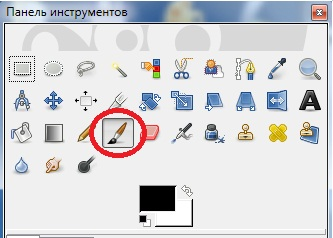
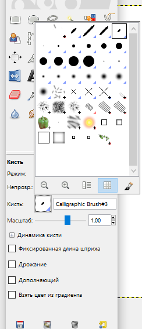

Кисть
Классический инструмент рисования
Кисть является наиболее классическим инструментом рисования в растровых редакторах. Принцип ее действия прост: выбираем данный инструмент, затем настраиваем форму, размер и прочие характеристики штриха и применяем кисть на изображении.
Параметры инструмента Кисть
Режим отвечает за способ смешивания рисуемого кистью штриха с фоном, на который он накладывается. Раскрыв свиток, мы обнаруживаем множество вариантов смешивания. Инструменты рисования позволяют рисовать и по-разному изменять изображение.
Стоит отметить, что данный параметр характерен для множества самых разнообразных инструментов и эффектов. На примере черного штриха кисти на белом фоне листа не удастся наглядно рассмотреть действие данного параметра. Убедитесь, что выбран режим Нормальный — основной режим смешивания.
Непрозрачность — параметр, отвечающий за непрозрачность накладываемого штриха. Его значение варьируется в пределах от 0 до 100 единиц. При значении, равном 100, штрих совершенно непрозрачен, при нуле прозрачен абсолютно. Разумеется, настраивая значение данного параметра, следует исходить из каких-либо промежуточных значений, с тем чтобы рисовать разные по степени прозрачности штрихи.
Кисть — параметр, отвечающий за форму штриха кисти. Нажмите на кнопку с изображением штриха — и раскроется список вариантов его формы.
Выбирая любой из предложенных вариантов, можно создавать аналогичные штрихи на поверхности изображения.
Масштаб — c помощью данного параметра можно изменять размеры рисуемого штриха. Увеличивая его значение, мы увеличиваем размеры штриха, а уменьшая — уменьшаем штрих. Справа от ползунка располагается численное выражение размера штриха. Далее располагается опция Динамика кисти. По щелчку по данной надписи раскроется дополнительный свиток параметров, позволяющих настраивать поведение кисти во время создания штриха.
Параметры здесь представлены в виде небольшой таблицы, где расположены ряды: Нажим, Скорость, Случайность, и колонки — Непрозрачность, Жесткость, Размер, Цвет. Устанавливая галочки на пересечении тех или иных линий, мы меняем характер поведения кисти во время движения.
Фиксированная длина штриха — опция, с помощью которой можно задать ограниченную длину каждого вновь создаваемого штриха. Установите галочку слева от данной надписи, и появится параметр Длина, используя который можно непосредственно задать необходимую длину. Стандартное значение этого параметра — 100 пикселей. Попробуйте создать длинную линию, включив эту опцию. Через 100 пикселей линия пропадет совсем, а на протяжении имеющейся длины будет плавно блекнуть. Так можно создать эффект, будто на кисти постепенно заканчивается краска во время рисования.
Дрожание — параметр, позволяющий создать иллюзию дрожания кисти во время рисования. Дрожание выражается в отклонении накладываемых штрихов от указываемой вами точки на листе.
Дополняющий — опция, позволяющая накладывать штрихи друг на друга. Действие данной опции наиболее полно проявляется при использовании прозрачных штрихов кисти. Задайте малое значение параметра Непрозрачность — не более 10 единиц. Теперь создаваемый штрих будет практически прозрачным. Если мы нанесем один полупрозрачный штрих поверх другого, то их общая насыщенность не будет суммироваться. Вместе они останутся практически полностью прозрачными. Если же вы установите галочку слева от опции Дополняющий, то интенсивность вновь накладываемых штрихов будет увеличиваться: чем чаще вы будете проводить полупрозрачной кистью в одной и той же точке изображения, тем насыщеннее будет становиться штрих. Этот режим позволяет сделать рисование полупрозрачной кистью более реалистичным.
Взять цвет из градиента — опция, позволяющая задавать градиентный цвет штриху кисти. При ее активации появляется небольшой свиток, где можно выбрать сам градиент, настроить его длину и характер повтора.
При использовании этой опции цвет рисуемого штриха будет плавно меняться по ходу рисования в соответствии с выбранным градиентом и его длиной. Область настройки кисти не содержит других параметров, но мы не рассмотрели еще один — цвет инструмента, который настраивается с помощью квадратиков цвета, расположенных на командной панели Цвет ближнего к нам квадратика и будет цветом создаваемого кистью штриха.
К сведению!
Рисовать штрихи кистью и подобными инструментами при помощи мыши бывает неудобно. Гораздо больше для этих целей подходит другой манипулятор — графический планшет. Используя планшет, вы можете рисовать кистью в GIMP, рисуя специальной ручкой на плоской поверхности, что гораздо удобнее.